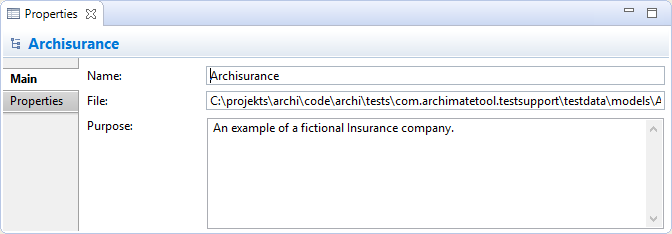

Propriétés du modèle
Sélectionner le noeud de plus haut niveau d'un modèle dans l'arborescence des modèles signifie que vous pouvez modifier ou consulter les propriétés suivantes dans la fenêtre des propriétés.
L'onglet principal

Modifier les propriétés "principales" d'un modèle ArchiMate
| Nom: |
Le nom du modèle ArchiMate |
| Fichier: |
Le nom de fichier du modèle (lecture seule) |
| Objectif: |
Un endroit pour saisir une description de l'objectif du modèle |
 Dans le champ texte "Objectif", les URLs qui commencent par "http://" "https://" ou "ftp://" seront affichés sous forme d'hyperlien. Quand vous appuyez sur Ctrl / Commande, le curseur devient une "main" et vous pouvez ouvrir le lien dans un navigateur.
Dans le champ texte "Objectif", les URLs qui commencent par "http://" "https://" ou "ftp://" seront affichés sous forme d'hyperlien. Quand vous appuyez sur Ctrl / Commande, le curseur devient une "main" et vous pouvez ouvrir le lien dans un navigateur.
L'onglet propriétés
Pour plus d'informations concernant la création et la gestion des propriétés utilisateur, voir Propriétés utilisateur.